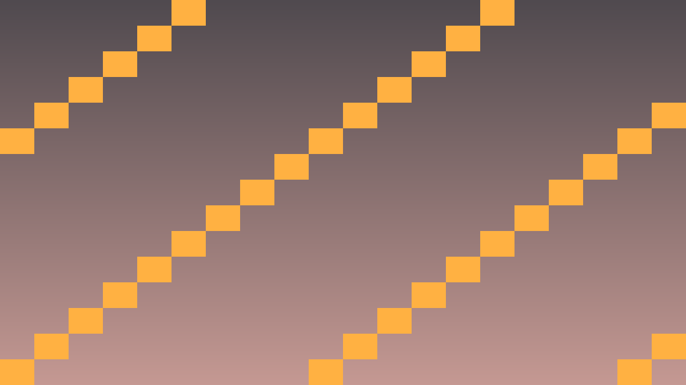
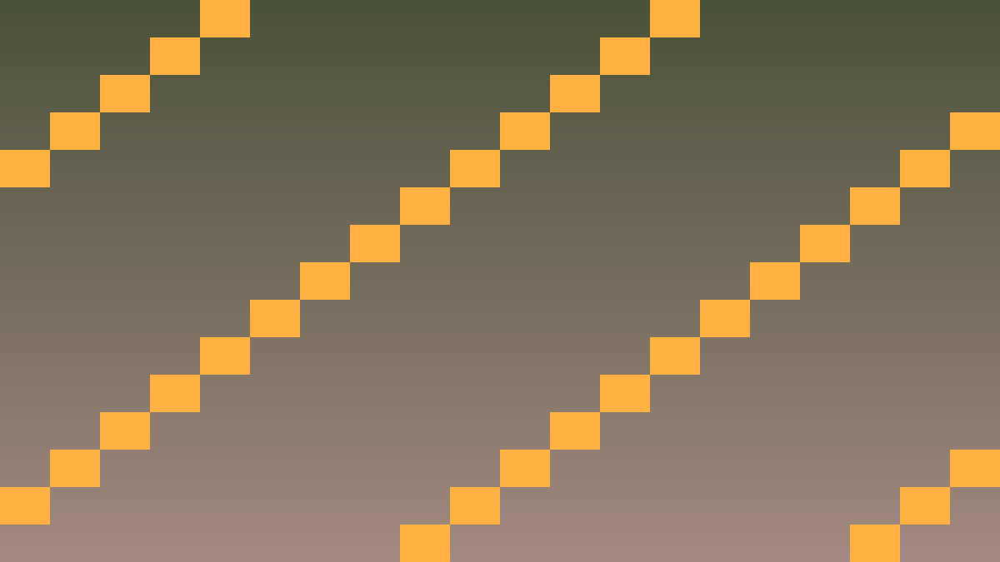

Tavs šīs stundas izaicinājums: Ģenerēt nejaušus, bet sakārtotus līmeņus ar algoritmu.
Pirms sāc: izmanto iepriekš apgūto un šīs lapas teorijas/koda piemērus. Ja vajadzīga jauna komanda vai rīks, vispirms atrodi tās paraugu teorijas sadaļā.
Procedural generation ir tehnika, kas algoritmiski rada saturu (līmeņus, labirintus, pasaules) bez manuālas dizainas. Klasiskais pieteikums — procedurāls klases labirints.
Pamata pieejas:
// Random walk labirints
class MazeGenerator {
private:
static const int WIDTH = 50;
static const int HEIGHT = 30;
int grid[WIDTH][HEIGHT];
public:
void generate(int seed) {
std::srand(seed);
// Sāc visu kā sienas
for (int x = 0; x < WIDTH; x++)
for (int y = 0; y < HEIGHT; y++)
grid[x][y] = WALL;
// Random walk
int x = WIDTH / 2, y = HEIGHT / 2;
for (int step = 0; step < 1000; step++) {
grid[x][y] = FLOOR;
int dir = std::rand() % 4;
if (dir == 0 && x > 1) x--;
else if (dir == 1 && x < WIDTH-2) x++;
else if (dir == 2 && y > 1) y--;
else if (dir == 3 && y < HEIGHT-2) y++;
}
}
};Atceries: šajā stundā nepietiek tikai panākt redzamu efektu editorā. Paskaidro, kura C++ klase glabā stāvokli, kura metode to maina un kā Godot node struktūra šo kodu izmanto.
Pārbaudi: C++ kods pārbauda failu kļūdas, validē datus, izmanto versijas lauku un pamato algoritmu sarežģītību.
#include <godot_cpp/variant/string.hpp>
using namespace godot;
struct PersistenceCheckpoint {
String lesson = "5.4 Procedural generation";
bool uses_cpp = true;
bool handles_missing_file = true;
bool validates_data = true;
bool documents_complexity = true;
};Atpazīsti šīs stundas galveno ideju un sasaisti to ar gala projektu Procedurālais klases labirints.
.hpp, .cpp vai Godot scēnas failā, nevis uzreiz lielu funkciju.klases_punkti, zvana_taimeris, pazudusais_markieris vai kafijas_pauze; mazliet humora drīkst, bet kodam jāpaliek skaidram.Izmanto šīs stundas prasmi nelielā, strādājošā projekta daļā.
.hpp, .cpp vai Godot scēnas failā, izmantojot teorijas piemēru kā sākumpunktu.Pārbaudi risinājumu, salīdzini rezultātus un atrodi, ko uzlabot.
Pievieno nelielu radošu uzlabojumu ar klases dzīves piemēru, nepārsniedzot apgūto vielu.


class MazeGenerator {
private:
static const int WIDTH = 50;
static const int HEIGHT = 30;
int grid[50][30];
public:
void generate(int seed) {
std::srand(seed);
// Visi sienas
for (int x = 0; x < WIDTH; x++)
for (int y = 0; y < HEIGHT; y++)
grid[x][y] = 1; // siena
// Random walk
int x = WIDTH / 2, y = HEIGHT / 2;
for (int step = 0; step < 800; step++) {
grid[x][y] = 0; // grīda
int dir = std::rand() % 4;
if (dir == 0 && x > 1) x--;
else if (dir == 1 && x < WIDTH-2) x++;
else if (dir == 2 && y > 1) y--;
else if (dir == 3 && y < HEIGHT-2) y++;
}
}
void render_to_tilemap(TileMap* tm) {
for (int x = 0; x < WIDTH; x++) {
for (int y = 0; y < HEIGHT; y++) {
int tile_id = grid[x][y];
tm->set_cell(0, Vector2i(x, y), tile_id, Vector2i(0, 0));
}
}
}
};